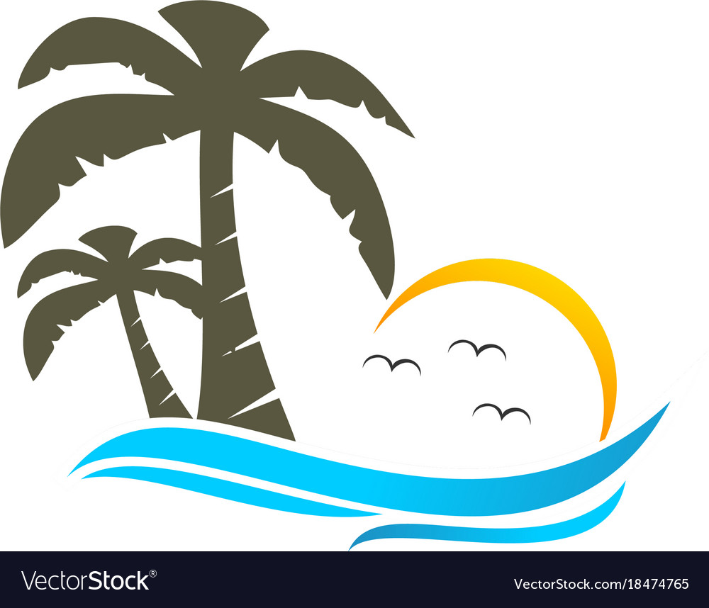

Sunny Skies Beach Resort
Home
Room & Rates
Amenities
Location
Contacts
Amenities
Swimming Pool
There are a few loungers inside the pool – the perfect spot to work your way through the utterly delicious cocktail and snack menu. Please note A minimum spend of R500 per person is required for use of the pool and loungers, subject to availability, to be settled on arrival.
Spa
The hilot, a classic Filipino massage, can also be experienced at Illume Spa for an hour and 30 minutes (Php 4,000/90 minutes). Enjoy it with a body scrub, a facial for men, and a muscle-relieving massage in the Sunny skies Beach Resort!
Retourant
With it’s eclectic vibe, mismatched furniture, multiple fire pits, a pool table and a ping pong table this is an awesome place for a night out. The Bungalow gets crowded so make sure to get there early.
Beach Accessories
In our resort you can find many accessories to your liking. They are long lasting and it can also be your souvenir.
Special Promo
We will give a 50% Discount to the first 50 Person who have alredy booked in this resort!